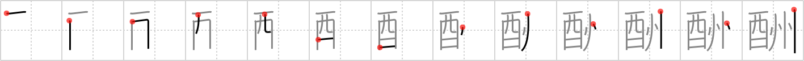

酬
← →
repay

Reading:
On-Yomi: シュウ、シュ、トウ — Kun-Yomi: むく.いる
Heisig story:
Whiskey bottle . . . state.
Koohii stories:
1) [Talka] 10-9-2007(204): Imagine a different kind of tax refund - instead of money, the state repays you with whiskey.
2) [Thora] 25-8-2007(128): Hint: bottle deposit refund - the state will repay the recycling deposit for each alcohol bottle returned.
3) [mcfate] 24-10-2007(35): If you take your whiskey across a state line, you'll have to repay the liquor tax in the new state.
4) [Zactacular] 15-10-2007(30): True story, the former communist state of Russia was once so poor it repayed it's teachers with vodka http://news.bbc.co.uk/2/hi/uk_news/education/177421.stm.
5) [mantixen] 23-9-2008(19): States like Michigan repay you for returning your whiskey bottles.